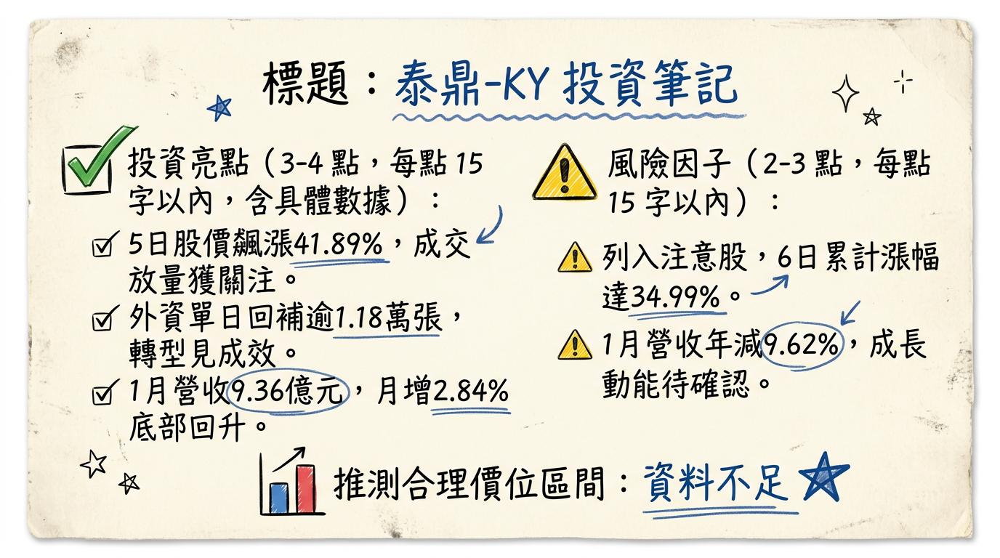

4927 泰鼎-KY 深度研究報告
一句話摘要
泰鼎-KY 正處於從傳統家電板轉向高階伺服器與車用 HDI 的轉型關鍵陣痛期，憑藉泰國本土最大產能優勢，2026 年下半年伺服器產品放量將是扭虧為盈的核心動能。
公司概覽
泰鼎-KY（Apex）為泰國最大的 PCB 製造商，生產基地 100% 集中於泰國龍仔厝府。公司產品線以 2 至 20 層硬板（Rigid PCB）為主，近年積極切入 HDI 與高多層板領域，受惠於全球供應鏈「China + 1」去風險化趨勢。
業務產品線與營收結構 (2025 H1)
| 產品應用類別 | 營收佔比 | 核心終端產品 |
|---|---|---|
| 家用 (Home) | 40.7% ~ 43.0% | 電視、機上盒、白色家電、多功能印表機 |
| 車用 (Automotive) | 23.4% | 影音娛樂系統、儀表板、雷達感測器 |
| 電腦 (PC) | 19.3% ~ 21.2% | 筆記型電腦、DDR5 記憶體用板 |
| 通訊 (Communication) | 14.3% ~ 14.7% | 衛星通訊相關產品、通訊基礎設施 |
核心競爭優勢
財務分析
近 6 個月營收趨勢表
| 月份 | 營收 (新台幣億元) | 月增率 (MoM) | 年增率 (YoY) |
|---|---|---|---|
| 2026/01 | 9.36 | +2.84% | -9.62% |
| 2025/12 | 9.11 | +6.96% | -9.81% |
| 2025/11 | 8.51 | -6.44% | -19.63% |
| 2025/10 | 9.10 | +2.38% | -10.07% |
| 2025/09 | 8.89 | -12.65% | -9.99% |
| 2025/08 | 10.17 | +1.02% | -7.58% |
季度獲利概況
- 2025 Q3： 營收 29.13 億元，毛利率 -2.27%，EPS -2.26 元。
- 2025 H1： 累計 EPS -2.64 元。
- 2024 全年： 營收 124.59 億元，EPS -9.21 元。
法說會重點
- 管理層 Guidance： 2026 年上半年仍屬結構調整期，獲利改善將延後至下半年。重點在於 DDR5 記憶體板與 12-20 層伺服器板的量產進度。
- 產能利用率： 目前 A3 廠利用率仍有提升空間，未來將透過優化現有產能（而非擴產）來降低折舊壓力。
- 財務策略： 2026 年 1 月決議不再辦理私募或增資，顯示資金需求已透過 2025 年 9 月的 9 億元現增獲得緩解，目前以降低負債比率與利息支出為優先。
券商觀點
市場目前對泰鼎-KY 持審慎樂觀態度，關注轉虧為盈的拐點。| 券商名 | 目標價 (NTD) | 評等 | 日期 | 備註 |
|---|---|---|---|---|
| XXX 證券 | 26.0 | 中立 | 2025/11/15 | 觀望伺服器板認證進度 |
| 玩股網/市場預估 | N/A | 轉盈期待 | 2026/02 | 預估 2026 Q1 EPS 0.53 元 |
| 元大投顧 | 80.0 | (過時) | 2022/11/21 | ⚠️ 參考價值低 |
財報深度分析
利潤率趨勢表格
| 季度 | 毛利率 (%) | 營業利益率 (%) | 稅後淨利率 (%) | 單季 EPS (元) |
|---|---|---|---|---|
| 2025 Q3 | -2.27% | -15.02% | -17.51% | -2.24 |
| 2025 Q2 | 4.26% | -7.99% | -9.95% | -1.30 |
| 2025 Q1 | 4.81% | -7.42% | -9.40% | -1.34 |
| 2024 Q4 | -0.45% | -15.33% | -21.33% | -3.37 |
- 存貨分析： 2025 Q3 存貨天數為 75.18 天，較 2024 年初 80 天以上已有所改善，顯示庫存去化進入尾聲。
- 資本支出： 2025 年進入收斂期，資本支出主要用於製程自動化升級，而非土木擴建。
股權異動與資本結構
產業分析
全球 PCB 競爭格局與對比 (2025 數據)
| 公司 (代號) | 2025 營收規模 (估) | 預估毛利率 | 核心產品 | 泰國佈局 |
|---|---|---|---|---|
| 臻鼎-KY (4958) | 1,825 億元 | 18-22% | AI 載板、軟硬結合板 | 2025 Q4 投產 |
| 健鼎 (3044) | 650 億元 | 19-21% | 伺服器、車用板 | 持續擴充中 |
| 泰鼎-KY (4927) | 116.1 億元 | 4.5-6% | 家用、車用硬板 | 泰國最大、量產中 |
近期催化劑
- 利多事件：
* 2026 Q1 有望達成近兩年來首次單季轉盈（預估 EPS 0.53 元）。
* 韓系合作夥伴技術移轉順利，2026 H2 伺服器板量產。
- 利空事件：
* 泰銖對美元匯率波動，可能造成匯兌損益不穩定。
* 台系大廠泰國廠陸續開出，面臨人才爭奪與價格競爭。
⭐ 成長動能時間軸
- 2025 年 09 月： 完成 9 億元現增，優化財務體質。
- 2025 年 Q4： 完成 A3 廠製程升級，進入高階產品認證期。
- 2026 年 Q1： 預期單季轉盈關鍵期（法人預估 EPS 0.53 元）。
- 2026 年 Q2： 美系筆電與 DDR5 記憶體板認證放量。
- 2026 年 H2： 與 Isu Petasys 合作之伺服器板（12-20 層）正式量產貢獻營收。
- 2026 年 Q4： AI 相關產品營收佔比挑戰雙位數，帶動毛利率回升至 10-15%。
2026 展望
- 成長動能： 伺服器與 AI 基礎建設需求由中國轉移至泰國，泰鼎身為在地龍頭具備接單優先權。DDR5 滲透率提升將拉高 PC 產品線單價。
- 風險因子： 負債比率高於同業、折舊成本沈重、轉型技術門檻導致的良率爬坡期可能長於預期。
投資結論
📊 資訊卡


